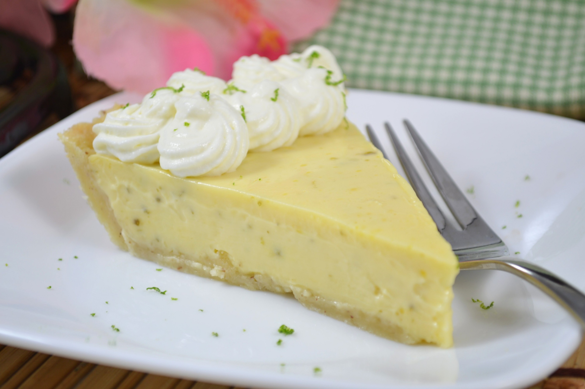

This page was recreated for educational purposes. This is not my recipe.
By Arlette Therese Abdallah
When I moved from Lebanon to Florida spring of 1999, I brought with me my love for cooking and search for new recipes. The famous key lime pie was new to me. It was a friend's best dessert, and he used to buy it from Costco every time we go for shopping. I tasted the pie at several places, but they were missing that wow flavor. I kept playing with the recipe, and the right flavor is found. I live now in North Bay, Ontario, and we only get the Key Limes twice a year, so sometimes I substitute with fresh lime juice. I hope you all enjoy!!